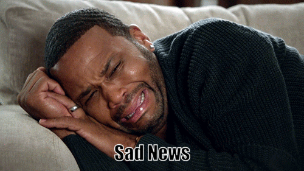

My
Journey
Home
11 AM
4 PM
6 PM
About
At the end of life, what really matters is not what we bought but what we build; not what we got but what we shared; not our competence but our character; not our success but our significance. Live a life that matters. Live a life of love.
We were on our way down as we were playing music and vybing to the music. We talked on the way until we got to Hopewell which was my stop.I remembered looking at kev saying "hey bro be careful,nuff ratingz ,see you tomorrow fam", my eye was still jumping and this time even faster,I was still wondering what was happening with my eye.After walking over to the supermarket to get something to eat I saw one of my ex girlfriend that I haven't seen in a long while.We were their talking and having a good time laughing. I didn't even remember that my eye was jumping as the conversation took my mind off everything. I was so glad to see her and she was also glad to see me. We talked for a good while and others that we knew us joined the conversation. After the conversation was over, we exchanged numbers and went on our separate drives. While in the taxi going home I then realized that my eye wasn't jumping again,I felt relieved as it was really affecting me. When I got home I then realized my phone battery died, I plug it in as I wanted to text back my ex girlfriend to see if I could get her back where she belongs however little did I know I was about the get the most shocking news of my life. Little did I know that time was running out on Kev.
80
After plugging in my phone I saw over 30 missed calls. I was wondering what was happening as all these missed calls were coming from my classmates. I remembered calling Robert and he was like "Bro Kev crash and is in serious condition". I was in disbelief because it seems like minute ago in which I came out the car.He sent me pictures on whatsapp of the accident that took place when I saw it tears came to my eyes seeing one of my bro's laying on the ground as if he was dead.According to the police they stated that "he was speeding and the road was damped he tried to overtake a car and in doing so he lost control of the vechile ending up into a big rock" because of the impact he was throw through his windshield into the bushes. The ambulance took time before it came as Robert was the one providing me with information because he was going down behind kev in another vechile. Ambulance finally arrived and they rushed him to the hospital.Everyone kept calling my phone as they remembered that it was myself and kev that went off together. I clarified with them that I came out at Hopewell and I was ok, that gave everyone relief as they thought I was involved. I remembered asking God to spare his life because I don't think I could live with all these memories knowing I was the last one that was their with him.

There are things in life that you will never understand, I remembered questioning why couldn't I know that when my eye was jumping it was because of that bad incident that would took place, I wished I could turn back time. I remembered going in my room singing and playing (Memories by Maroon-5).
3 Months Later
He was still in the hospital however the type of accident that took place you would have thought he would have broken bones or something worst however he didn't, many would say God was on his side as I said the same.He had brain damage and memory lost but at this point 2020 he has fully recovered , finished his degree and is currently working.
Live life to the fullest,be kind,be loving, be helpful and be humble because no one knows the minute or hour they will die or will be in a situation where you're only help is that person who you pass everyday.